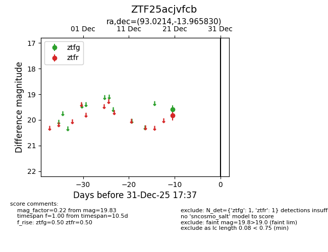
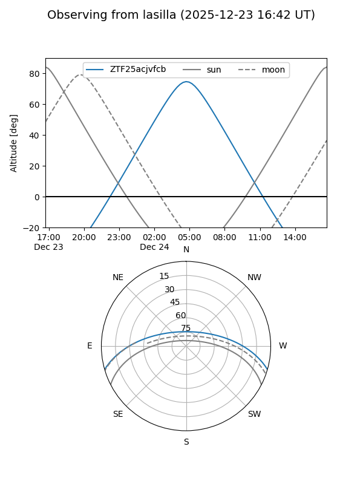
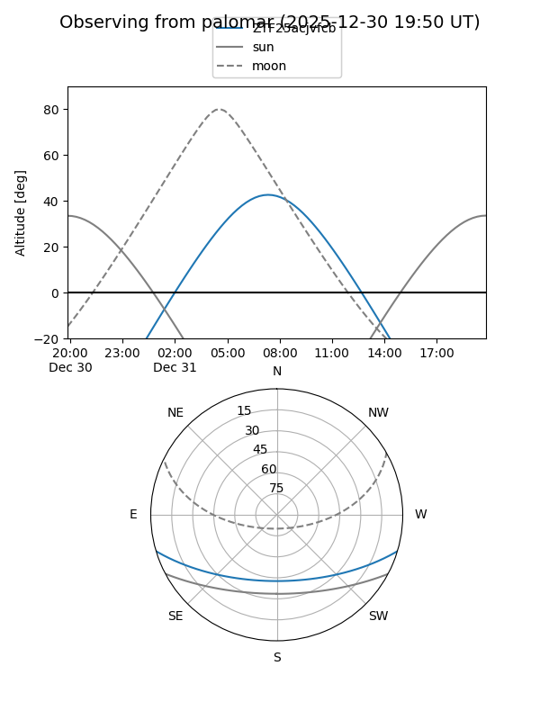

ZTF25acjvfcb
Target ZTF25acjvfcb at 2025-12-21 08:28
Aliases and brokers:
FINK: fink-portal.org/ZTF25acjvfcb
Lasair: lasair-ztf.lsst.ac.uk/objects/ZTF25acjvfcb
ALeRCE: alerce.online/object/ZTF25acjvfcb
alt names
ZTF25acjvfcb (ztf,fink_ztf)
Coordinates:
equatorial (ra, dec) = 93.0214,-13.96583
equatorial (HMS+DMS) = 06:12:05.14,-13:57:56.99
galactic (l, b) = (221.2140,-14.92890)
Flags:
Photometry:
last ztfr=19.83
1 ztfr detections
Lightcurve

Visibility


Additional plots